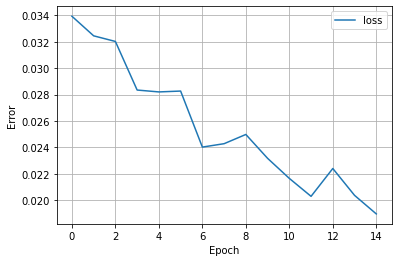

Descripción general de la práctica
El método utilizado para la función de perdida es la ecuación de error cuadrático Función de perdida: Ecuación error cuadrático medio
Función de perdida: Ecuación error cuadrático medio
Algoritmo de reconocimiento de patrones
Para la primera entrega se entreno una red neuronal con una tecnologia a elección y un dataset (de 10 diferentes caracteres) a elección. La tecnologia seleccionada fue el lenguaje de Python, debido a la facilidad de implementación de redes neuronales mediante paquetes como ScikitLearn, Tensorflow o PyTorch. Se uso la libreria de Tensorflow y se implemento la red neuronal mediante su API de Keras. El dataset usado fue el MNIST, una base de datos de 10 numeros escritos a manos, digitos del 0 al 9. Este dataset ya viene implementado directamente en la API de Keras, cuenta con 70.000 imagenes, usando 60.000 para Train y 10.000 para Test, despues, se uso el 20% de los datos de Train como validation. Se carga el dataset mediante:
.png)
Este dataset automaticamente nos arroja la división anteriormente descrita, entre datos de entrenamiento y prueba; una vez realizado esto, se normaliza el dataset, como viene en imagenes .jpg y en escala de grises, se divide la cantidad de pixeles entre 255, esto se hace como buena practica antes de entrenar la red. Los labels o etiquetas, que son los identificadores de cada clase de salida, pasan por un proceso de conversión a variables dummy, denominado One-hot Encoding. Este proceso permite separar las categorias de los números en columnas independientes, esto evita que el algoritmo pueda generar mas preferencia sobre las clases con un mayor número, tambien se considera una buena practica sobre variables categoricas ordinales , antes de entrar al entrenamiento del algoritmo. El one-hot encoding reduce el overfitting y permite una ejecución mas rapida del entrenamiento del algoritmo, pues se facilita la operación de matrices solo con variables binarias (1 y 0). Para evitar problemas en la inversión de matrices (durante el entrenamiento) debido a la diagonal de unos que representa el proceso de one-hot encoding, se elimina la primera o ultima columna generada. Esto no supone un problema, pues el digito (columna) que se suprima, quedara descrito mediante la ausencia del dato en las columnas de los otros digitos. Los datos de entrada del MNIST entran como una imagen de 28x28x1, escala de grises y sin ninguna operación adicional previa al entrenamiento (como lo puede ser data agumentation). Se describe el modelo de redes convolucionales (ideales para obtener caracteristicas de imagenes) como se ve a continuación:
.png) Código de modelo de red convolucional
Código de modelo de red convolucional
El modelo esta descrito mediante la tensorflow como:
Modelo de TensorflowSe eligio el batch de 32, pues se encontro que es lo recomendado en la literatura. Las epocas se fijaron a 15 pues tras varias pruebas no se encontro mejoria significativa al incrementar este parametro. La función de perdida de definio como “categorical_crossentropy” debido a que es un problema de clasificación multiclase. Se utilizo un optimizar Adam con los parametros por defecto de Keras. La metrica a evaluar fue el Accuracy. En la ultima epoca, finalizado el entrenamiento se obtuvo:
.png) Código de modelo de red convolucional
Código de modelo de red convolucional
Se generó una grafica de el error (loss) para cada epoca durante el entrenamiento:
 Gráfica de val lossSe genero otra grafica para mirar el desempeño entre el set de Train y el de Validation, como se puede observar, en la ultima epoca el valor de la metrica evaluada es muy cercano, dando un modelo muy robusto en cuando a overfitting.
Gráfica de validación de entrenamientoEvaluando el modelo con los datos de Test, se obtuvo (ver salida), lo que comparado con la grafica anterior, nos indica un modelo con excelente desempeño tanto con datos de entrenamiento como de test:
.png) Datos de test loss y test accuracy
Datos de test loss y test accuracy
 Algoritmo de reconoc de patrones
Algoritmo de reconoc de patrones
Interfaz de usuario
La interfaz de usuario se realiza con Python con la librería tkinter, se tienen dos paneles (uno a la derecha y otro a la izquierda); en el de la derecha se tienen los valores de patrones seguidos por sus porcentajes de coincidencia. En el panel izquierdo se dibuja el patron que se va+ a evaluar; haciendo click pinta de blanco y finalmente se evalua con las pestañas superiores ya sea con los valores calculados de forma manual o con keras auto tuner
GUI con valores generados por Keras GUI con los valores hallados de forma manualGeneración de trayectorias
Para la segunda entrega se planteo la creación de una red neuronal desde cero, las estrategias usadas se describiran a continuación, pero la matematica implicita se describira de manera breve (como el algoritmo de backpropagation). Se carga de la misma manera el dataset desde Keras (como en la primera entrega), y su uso sera unicamente para el ingreso de datos, mas no para el entrenamiento de la red. Se procede a realizar el proceso de normalización (descrito anterior mente) y de reshape, este ultimo permite que las imagenes queden en un tensor de 28x28, donde cada casilla contiene el valor normalizado del pixel en escala de grises. Por último, se usa la utilidad “to_categorical” de Keras para poder obtener de manera automatica el one hot-encoding de la salida. Se usaron las función de activación ReLU (para las capas internas) y Softmax (de salida), de manera similar a la implementación de la primera entrega. La función de perdida, a diferencia del anterior entrega, se utilizo el error cuadratico medio, por facilidad de implementación en código. El learning rate se definio a 0.001, se uso vectorización como estrategia para reducir el costo computacional, permitiendo entrenaran con el mismo dataset de MNIST y en la misma magnitud (60.000 imagenes). Por lo que la entrada del algoritmo era una matriz de 60.000x784, en donde el 784 pertenece a la cantidad de neuronas en la capa de entrada (28x28, una neurona por pixel). Los pesos, los parametros b y los cambios de estos dos, se guardaron en un diccionario a medida que la red entrenaba, por lo que todo el resultado del entrenamiento quedo en una solo estructura. La arquitectura elegida fueron 4 capas de neuronas, en donde se incluian:
- La de entrada, con 784 neuronas.
- Dos capas ocultas, una de 128 y otra de 64 neuronas.
- La última capa de 10 neuronas.
- Se usaron mas neuronas (a comparación de la anterior entrega) para intentar suplir la falta de operaciones
de Pooling o Dropout que teniamos en el anterior modelo.
- Este algoritmo no usa set de validación, solo entrena con las 60.000 para train.
- Tuvo una Accuracy sobre test del 96%.
- El diccionario generado, con todos los pesos del entrenamiento, fue exportado a un archivo .json
para su posterior uso, generando la misma estrategia que la entrega pasada, solo que esta vez solo
se podia exportal los pesos en vez de todo el modelo, ademas de que toca implementar el algoritmo
nuevamente si se requiere usar los pesos, pero esto nos entrega la facilidad de no tener que
reentrenar el modelo para usarlo.
Simulación
Después de haber identificado los números, se procede a realizar la identificación de la trayectoria, es importante aclarar que la identificación de dicha trayectoria por la red de kohonen no hacia parte para esta entrega de laboratorio aun así se implementó. Para poder realizarla se lee un archivo CSV proporcionado por el software Python; esto con el fin de realizar una “conexión” esto entre comillas porque es la forma en como obtenemos los datos generados de un software y utilizados por el otro, esto saber las posiciones donde se encuentran los cubos que serán recogidos por el robot realizado. Esta parte se muestra en la siguiente imagen
Ecuación error cuadrático medioPosteriormente se realizan las cuatro fases necesarias para este tipo de redes como lo son sus etapas: Asignación de pesos, Proceso competitivo, proceso cooperativo y adaptativo. Inicialmente se determina cuales son los valores máximo y mínimo para cada una de sus entradas en este caso para la posición en x y en y, esto con el fin de generar los pesos con valores aleatorios dentro del rango de los valores de entrada. Posteriormente se realiza el proceso competitivo el cual consiste en buscar cual neurona está más cerca del valor de la entrada, esto realizo con la distancia euclidiana con la ecuación que se muestra a continuación

El siguiente paso es el cooperativo este consiste en crear una función gaussiana a partir de la neurona ganadora del paso anterior y con esto empezar a disminuir el porcentaje de pertenencia en las neuronas vecinas para este paso se utiliza la siguiente expresión

Donde el valor de sigma es el número de neuronas y d es el paso que se va generando entre las neuronas vecinas iniciando en un valor de cero para la neurona ganadora y vas incrementando hacia las dos vecindades de esta neurona ya que es de una sola dimensión hasta llegar a la neurona más leja.
Finalmente se entra a la etapa del proceso adaptativo en el cual se busca que los pesos varíen dependiendo de cual de los puntos ingresados este mas cercano esto con el fin de crear grupos y poder tener con objetivo la trayectoria mas adecuada y mas optima para el desplazamiento del robot móvil, para este proceso se utiliza la siguiente expresión

Es importante aclarar que el valor de μ es un factor de aprendizaje se calcula de la siguiente manera

donde μ_0 es una constante que por recomendaciones toma el valor 0.1. Ya con esto se termina terminan las cuatro etapas de esta red y para lograr un resultado optimo se realiza varias veces el cálculo y se para por iteraciones dando como resultado la siguiente imagen
 Simulación de la trayectorio
Simulación de la trayectorio
Como ultimo paso se realiza la limpieza de las neuronas que se encuentran lejas a los puntos esto con el fin de reducir los puntos intermedios entre las posiciones importante en este caso la ubicación de las cajas como se muestra a continuación.
Simulación de la trayectorioPara la realización de la simulación se envían las posiciones al Workspace de Matlab esto con el fin de poderlas leer desde simulink y realizar el control de alto nivel y de bajo nivel como se había mostrado en las entregas anteriores.
En esta nueva entrega, se mejora la red de kohonen mediante TSP este es uno de los problemas de optimización combinatoria más populares donde se describe a un vendedor que debe viajar entre un número N de ciudades.Este problema implica optimizar la duración del recorrido, por lo que el recorrido con la longitud mínimo se considera el recorrido óptimo; se han propuesto varios enfoques para resolver el TSP, algunos de los métodos incluyen el uso de algoritmos evolutivos como el algoritmo genético (GA) o la red neuronal de Kohonen. El TSP es una tarea de optimización que surge en muchas situaciones prácticas, siendo n el número de ciudades y dij es la distancia entre la ciudad i y ciudad j, i, i ∈ 1, 2, 3, ..., n. El TSP encuentra el camino más corto que une todas las ciudades de modo que todas las ciudades se visiten exactamente una vez
Visualización interfaz distribución de los cubos Mapeo en matlab Generación de trayectorias distribución de los cubosTreayectoria limpia
La red de hopfield tiene la característica de tener un tipo de aprendizaje no supervisado esto quiere decir que un experto al que llamaremos así es diseñador de la arquitectura este le enseña a la red muchos patrones como se hacia con las redes neuronales de entregas pasadas en vez de esto solamente sera un patrón por cada numero del 0 a 9 como se venia trabajando en entregas pasadas.Para explicar de manera sencilla el funcionamiento de esta red representada como una superficie de la red en donde están separados cada uno de los números que se desean identificar, lo deseado es que la red llegue a un estado mínimo de energía es decir que alguno de los patrones ingresados por el usuario encuentre algunas de estos números convergiendo alguno de ellos.Para lograr lo anteriormente mencionado es necesario saber que el cambio de actualización no serán los pesos si no las salidas de la red.
Para probar el funcionamiento de la red se realizaron diversas iteraciones para encontrar los mejores resultados con ambos métodos de entrenamiento y métodos de reconstrucción mediante dos iteraciones realizadas la primera tiene la reconstrucci ón del numero seis el entrenamiento fue echo por pseudo inversa con 24% de ruido el método de reconstrucción usado fue síncrono, caso contrario con el numero 8 a identificar y reconstruido el entrenamiento es realizado con hebbiano y la reconstrucción con el método asíncrono el porcentaje de ruido es del 37%
Algoritmos genéticos
La red de hopfield tiene la característica de tener un tipo de aprendizaje no supervisado esto quiere decir que un experto al que llamaremos así es diseñador de la arquitectura este le enseña a la red muchos patrones como se hacia con las redes neuronales de entregas pasadas en vez de esto solamente sera un patrón por cada numero del 0 a 9 como se venia trabajando en entregas pasadas.Para explicar de manera sencilla el funcionamiento de esta red representada como una superficie de la red en donde están separados cada uno de los números que se desean identificar, lo deseado es que la red llegue a un estado mínimo de energía es decir que alguno de los patrones ingresados por el usuario encuentre algunas de estos números convergiendo alguno de ellos.Para lograr lo anteriormente mencionado es necesario saber que el cambio de actualización no serán los pesos si no las salidas de la red.
Físico
En la ultima entrega se hizo uso de tecnicas de visión de maquina para poder identificar los caracteres impresos sobre cubos de 5x5cm, que serian posteriormente recolectados por el robot movil. La estrategia usada se describe a continuación:
-
Primero se genero el terreno y los cubos, el terreno esta en alto contraste con los cubos,
para que sea de facil identificación. El piso (2x2m) es de color blanco, mientras que los
cubos son de color negro y blanco, con caracteres impresos directamente del dataset MNIST.
-
Para los numeros, se decidio usar el 1, 4 y 8, por la alta diferencia entre sus trazos que
permite una mayor precisión al momento de usar la red neuronal.
-
El modelo usado fue el descrito en la primera entrega, pues tuvo mejor desempeño en el dataset de Test,
asi como en posteriores pruebas en los caracteres dibujados en la interfaz de la segunda entrega.
Se tomaron varias imagenes como la descrita a continuación:
Escaneo del tapete y cubosEl robot de posicióna cerca del punto (0,0) del m, se generó una mascara sobre la imagen para despues poder separar los digitos independientemente, en esta mascara se usaron dos operación morfologicas: un threshold para separar el blanco y negro (binario invertido y OTSU), y una operación de dilatación (para discriminar los digitos del recuadro que los contiene). La mascara quedo como la imagen que se ve a continuación:
Máscara finalSimulación
A continuación se muestran las simulaciones
-
Redes de Kohonen
-
Redes de Hopfield
-
Algoritmos genéticos